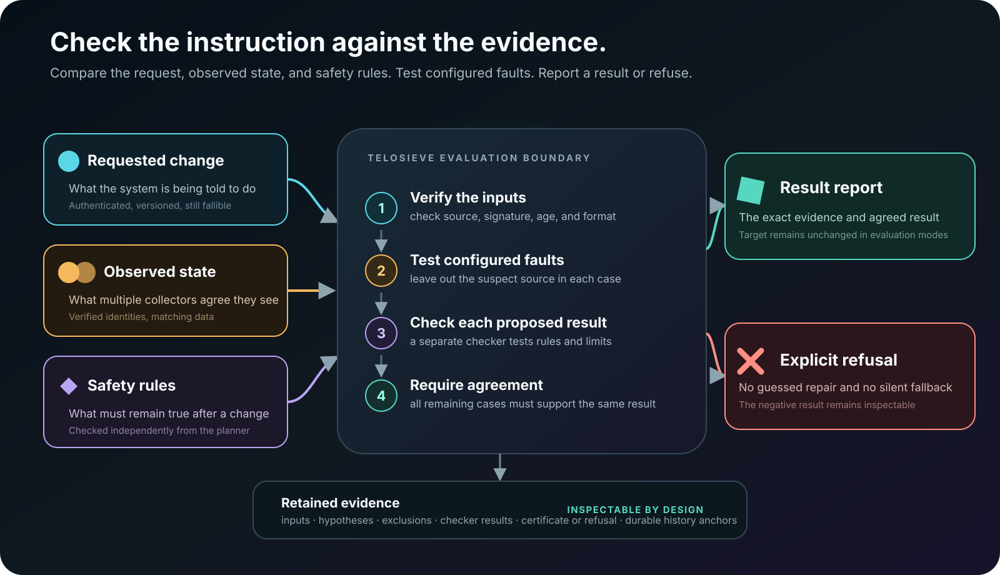

Provenance is not truth
Identity and signatures show where evidence came from. They do not prove that its content is correct.
Read-only evaluation candidate
Telosieve examines infrastructure intent as evidence, not truth. It keeps authorities separate, tests what could be wrong, and refuses when the surviving evidence cannot justify one bounded result.
Current boundary: evaluates and records decisions; never mutates Kubernetes, OpenTofu, Redis, PostgreSQL, or HTTP targets.
The control-plane assumption
Reconcilers are designed to make reality match desired state. If that desired state is stale, compromised, inconsistent, or malicious, perfect reconciliation can faithfully create the wrong outcome. Telosieve investigates a stricter model: authenticate every source, trust none implicitly, and preserve uncertainty as a result.
Identity and signatures show where evidence came from. They do not prove that its content is correct.
When surviving explanations disagree, stopping with inspectable evidence is safer than inventing certainty.
Inputs, hypotheses, execution time, outputs, and compatibility are explicitly limited and fail closed.
How it works
Telosieve accepts a result only after it survives the declared faults and an independent viability check.

Testable integrations
Each integration uses narrow read-only permissions, explicit resource bounds, and mandatory observation quorum.
Shadow snapshots and live four-read coherence checks against a real disposable API server.
Saved plan bytes through corroborating producers, with no backend credentials or apply path.
Bounded namespace collection through technically restricted read-only identities.
Repeatable-read snapshots through SELECT-only roles, including concurrent-writer tests.
Fixed GET-only collection with bearer or TLS 1.3 mutual authentication and revocation checks.
A versioned executable adapter and quorum response contract for further read-only integrations.
Evidence, not theatre
Telosieve retains refusals, exclusions, timeouts, unsupported cases, and known correlated-fault limits alongside successful results. Project-controlled testing is labelled as such. Independent operation and independent assessment are not implied.
Explore adversarial coverage
Inspect the mechanism
Build the candidate locally, replay the retained scenarios, challenge the trust boundary, or implement a read-only integration.